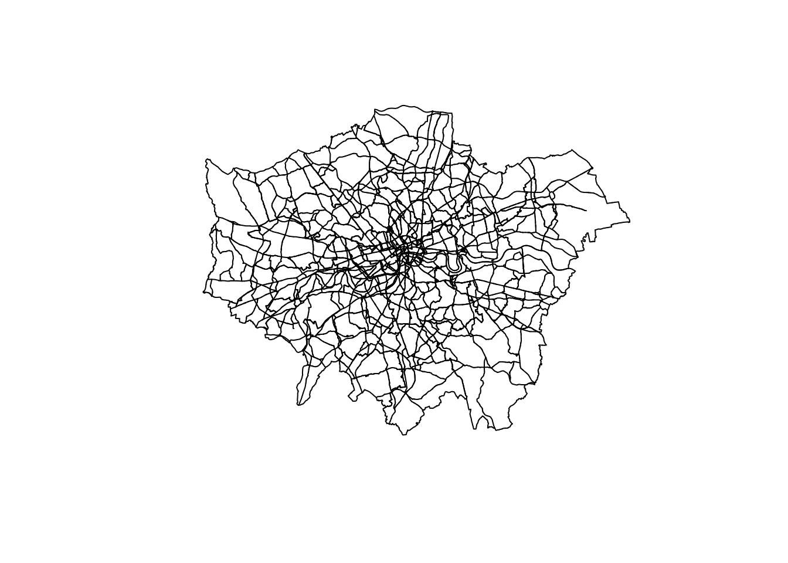
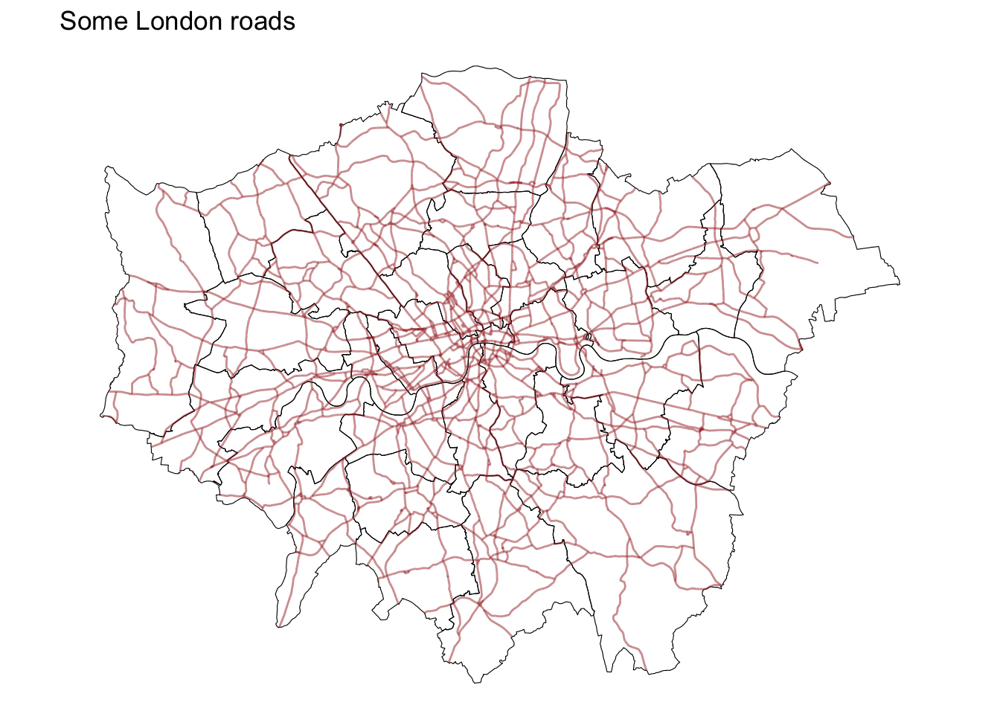
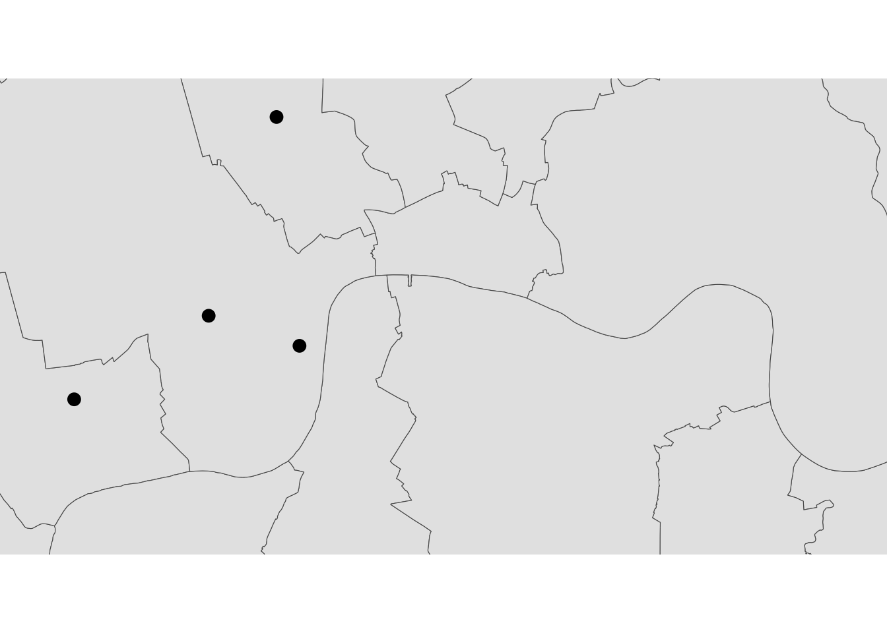
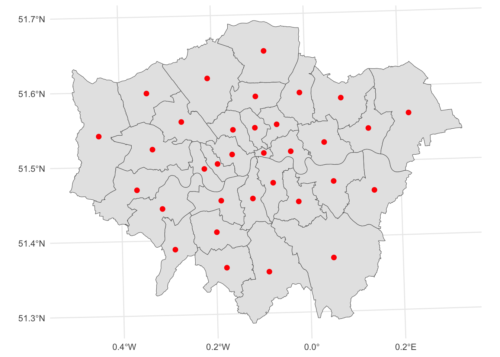
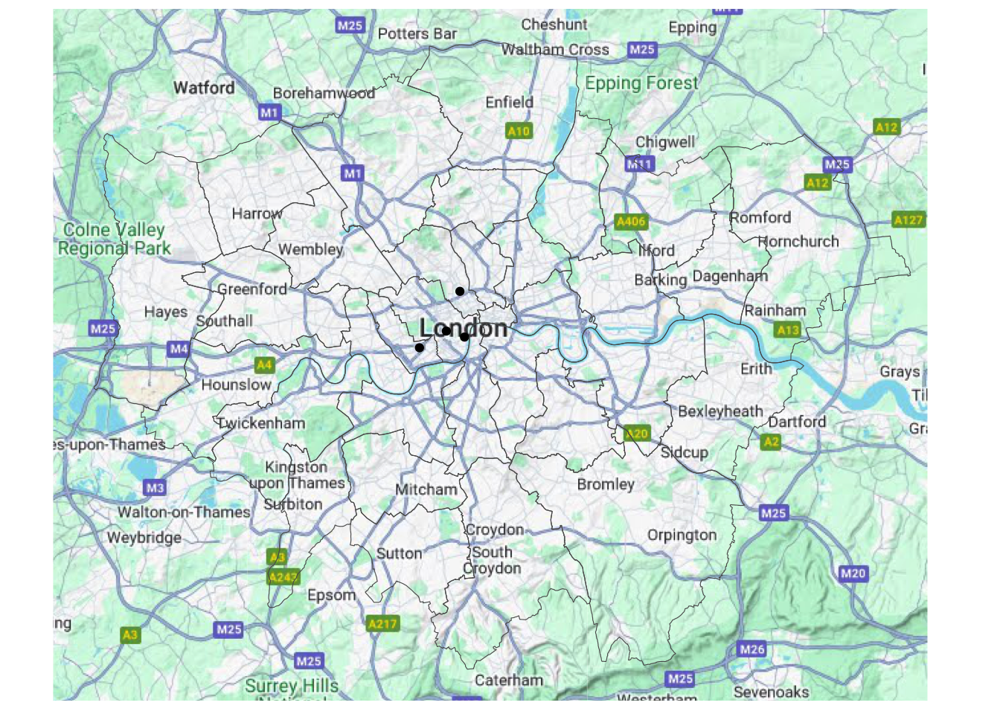

# Load the 'sf' library, which stands for Simple Features, used for working with spatial data.
library(sf)
# Load the 'tidyverse' library, a collection of packages for data manipulation and visualization.
library(tidyverse)
# Load the 'tmap' library, which is used for creating thematic maps and visualizing spatial data.
library(tmap)
# The 'readr' library provides a fast and user-friendly way to read data from common formats like CSV.
library(readr)
# Converts Between GeoJSON and simple feature objects
library(geojsonsf)
# Using data from OpenStreetMap (OSM)
library(osmdata)
# Static maps
library(basemapR)Lab
In this lab, we will learn how to load, manipulate and visualize spatial data. In some senses, spatial data are usually included simply as “one more column” in a table. However, spatial is special sometimes and there are few aspects in which geographic data differ from standard numerical tables. In this session, we will extend the skills developed in the previous one about non-spatial data, and combine them. In the process, we will discover that, although with some particularities, dealing with spatial data in R and Python largely resembles dealing with non-spatial data.
Installing packages
We will start by loading core packages for working with spatial data. See detailed description of R.
To install basemapR you will need to do run
library(devtools)
install_github('Chrisjb/basemapR')Datasets
Today we are going to go to London. We will be playing around with different datasets loading them both locally and dynamically from the web. You can download data manually, keep a copy on your computer, and load them from there.
Creating geographic data
First we will use the following commands create geographic datasets from scratch representing coordinates of some famous locations in London. Most projects start with pre-generated data, but it’s useful to create datasets to understand data structures.
poi_df = tribble(
~name, ~lon, ~lat,
"The British Museum", -0.1459604, 51.5045975,
"Big Ben", -0.1272057, 51.5007325,
"King's Cross", -0.1319481, 51.5301701,
"The Natural History Museum", -0.173734, 51.4938451
)
poi_sf = sf::st_as_sf(poi_df, coords = c("lon", "lat"), crs = "EPSG:4326")Types of Data
Now let’s look at the different types of geographical data starting with polygons. We will use a dataset that contains the boundaries of the districts of London. We can read it into an object named districts.
We first import the district shapefile use read_sf, we then plot it to make sure we are seeing it ‘correctly’. We us $geometry to plot just the geometry, if we don’t include $geometry R will plot the first 9 columns and if the dataset is large this is not advisable.
districts <- read_sf("data/London/Polygons/districts.shp")
plot(districts$geometry) # Create a simple plotWe them import a file of roads in London and plot it.
a_roads <- read_sf("data/London/Lines/a_roads.shp")
# If you needed to import a `geojson` this would be the function.
#a_roads <- geojson_sf("data/London/Lines/a_roads.geojson")
plot(a_roads$geometry)We can also import point files. So far, we have imported shapefiles and geojsons, but we can also obtain data from urls like in the Open Science DIY session or from other sources like OpenStreetMap. Both R and Python have libraries that allow us to query OpenStreetMap.
osm_q_sf <- opq("Greater London, U.K.") %>% # searching only in Greater London
add_osm_feature(key = "building", value = "museum") %>% #adding osm data that is tagged as a museum
osmdata_sf () # transforming to sf objectThe structure of osmdata objects are clear from their default print method, illustrated using the museum example. We will use them shortly.
osm_q_sf Object of class 'osmdata' with:
$bbox : 51.2867601,-0.5103751,51.6918741,0.3340155
$overpass_call : The call submitted to the overpass API
$meta : metadata including timestamp and version numbers
$osm_points : 'sf' Simple Features Collection with 206 points
$osm_lines : NULL
$osm_polygons : 'sf' Simple Features Collection with 8 polygons
$osm_multilines : NULL
$osm_multipolygons : 'sf' Simple Features Collection with 1 multipolygonsYou do not need to know at this point what happens behind the scenes when we run these lines but, if you are curious, we are making a query to OpenStreetMap (almost as if you typed “museums in London, UK” within Google Maps) and getting the response as a table of data, instead of as a website with an interactive map. Pretty cool, huh?
Note: the code cell above requires internet connectivity.
Important: Be careful, if you query too much data, your environment is likely to get stuck.
Inspecting Spatial Data
Inspecting
Just like a dataframe (see the OpenScience Lab), we can inspect the data (attributes table) within a spatial object. The most direct way to get from a file to a quick visualization of the data is by loading it and calling the plot command. Let’s start by inspecting the data like we did for non spatial dataframes.
We can see our data is very similar to a traditional, non-spatial dataFrame, but with an additional column called geometry.
head(districts) # the command "head" reads the first 5 rows of the dataSimple feature collection with 6 features and 2 fields
Geometry type: POLYGON
Dimension: XY
Bounding box: xmin: 515484.9 ymin: 156480.8 xmax: 554503.8 ymax: 198355.2
Projected CRS: OSGB36 / British National Grid
# A tibble: 6 × 3
DIST_CODE DIST_NAME geometry
<chr> <chr> <POLYGON [m]>
1 00AA City of London ((531028.5 181611.2, 531036.1 181611.5, 531074…
2 00AB Barking and Dagenham ((550817 184196, 550814 184189.1, 550799 18416…
3 00AC Barnet ((526830.3 187535.5, 526830.3 187535.4, 526829…
4 00AD Bexley ((552373.5 174606.9, 552372.9 174603.9, 552371…
5 00AE Brent ((524661.7 184631, 524665.3 184626.4, 524667.9…
6 00AF Bromley ((533852.2 170129, 533850.4 170128.5, 533844.9…We can inspect the object in different ways :
districts[1,] # read first rowSimple feature collection with 1 feature and 2 fields
Geometry type: POLYGON
Dimension: XY
Bounding box: xmin: 530966.7 ymin: 180404.3 xmax: 533842.7 ymax: 182198.4
Projected CRS: OSGB36 / British National Grid
# A tibble: 1 × 3
DIST_CODE DIST_NAME geometry
<chr> <chr> <POLYGON [m]>
1 00AA City of London ((531028.5 181611.2, 531036.1 181611.5, 531074 18161…districts[,1] # read first columnSimple feature collection with 33 features and 1 field
Geometry type: POLYGON
Dimension: XY
Bounding box: xmin: 503568.1 ymin: 155850.8 xmax: 561957.4 ymax: 200933.9
Projected CRS: OSGB36 / British National Grid
# A tibble: 33 × 2
DIST_CODE geometry
<chr> <POLYGON [m]>
1 00AA ((531028.5 181611.2, 531036.1 181611.5, 531074 181610.3, 531107 18…
2 00AB ((550817 184196, 550814 184189.1, 550799 184162.6, 550797.2 184159…
3 00AC ((526830.3 187535.5, 526830.3 187535.4, 526829 187534.7, 526825.3 …
4 00AD ((552373.5 174606.9, 552372.9 174603.9, 552371 174595.3, 552367.9 …
5 00AE ((524661.7 184631, 524665.3 184626.4, 524667.9 184623.1, 524673.5 …
6 00AF ((533852.2 170129, 533850.4 170128.5, 533844.9 170127.9, 533842.6 …
7 00AG ((531410.7 181576.1, 531409.4 181573.1, 531409.4 181573.1, 531405 …
8 00AH ((532745.1 157404.6, 532756.3 157394.6, 532768.1 157384, 532777.3 …
9 00AJ ((512740.6 182181.6, 512740.1 182185.9, 512739.5 182190.5, 512739.…
10 00AK ((530417 191627.4, 530416.8 191627.6, 530410 191631.2, 530396.3 19…
# ℹ 23 more rowsdistricts[1,1] #read first row, first column: 00AASimple feature collection with 1 feature and 1 field
Geometry type: POLYGON
Dimension: XY
Bounding box: xmin: 530966.7 ymin: 180404.3 xmax: 533842.7 ymax: 182198.4
Projected CRS: OSGB36 / British National Grid
# A tibble: 1 × 2
DIST_CODE geometry
<chr> <POLYGON [m]>
1 00AA ((531028.5 181611.2, 531036.1 181611.5, 531074 181610.3, 531107 181…# variable can be called using the operator $
districts$DIST_NAME #read the column "DIST_NAME" [1] "City of London" "Barking and Dagenham" "Barnet"
[4] "Bexley" "Brent" "Bromley"
[7] "Camden" "Croydon" "Ealing"
[10] "Enfield" "Greenwich" "Hackney"
[13] "Hammersmith and Fulham" "Haringey" "Harrow"
[16] "Havering" "Hillingdon" "Hounslow"
[19] "Islington" "Kensington and Chelsea" "Kingston upon Thames"
[22] "Lambeth" "Lewisham" "Merton"
[25] "Newham" "Redbridge" "Richmond upon Thames"
[28] "Southwark" "Sutton" "Tower Hamlets"
[31] "Waltham Forest" "Wandsworth" "Westminster" We can read or create subsets:
# dataframe can be subsetted using conditional statement
# read the rows which have "City of London" as value for DIST_NAME
districts[districts$DIST_NAME== "City of London",] Simple feature collection with 1 feature and 2 fields
Geometry type: POLYGON
Dimension: XY
Bounding box: xmin: 530966.7 ymin: 180404.3 xmax: 533842.7 ymax: 182198.4
Projected CRS: OSGB36 / British National Grid
# A tibble: 1 × 3
DIST_CODE DIST_NAME geometry
<chr> <chr> <POLYGON [m]>
1 00AA City of London ((531028.5 181611.2, 531036.1 181611.5, 531074 18161…Note Go back to open science for subsetting with dplyr.
Quick visualisation
Let’s start by plotting London in a colour and adding Hackney (a district) in a different colour.
# plot london in grey
plot(districts$geometry, col = "lightgrey")
# Add city of London in turquoise to the map
plot(districts[districts$DIST_NAME == "Hackney", ]$geometry, # select city of london
col = "turquoise",
add = T) # add to the existing mapSome guidance on colours in R can be found here.
How to reset a plot:
plot(districts$geometry, reset = T) # reset
Styling plots
It is possible to tweak many aspects of a plot to customize if to particular needs. In this section, we will explore some of the basic elements that will allow us to obtain more compelling maps.
Note: some of these variations are very straightforward while others are more intricate and require tinkering with the internal parts of a plot. They are not necessarily organized by increasing level of complexity.
Plotting different layers
We first start by plotting one layer over another
plot(districts$geometry)
plot(a_roads$geometry, add=T) # note the `add=T` is adding the second layer.
Or use the ggplot package for something a bit fancier
ggplot() +
geom_sf(data = districts, color = "black") + # Plot districts with black outline
geom_sf(data = a_roads, color = "brown") + # Plot roads with brown color and 50% transparency
theme_minimal() Changing transparency
The intensity of color of a polygon can be easily changed through the alpha attribute in plot. This is specified as a value betwee zero and one, where the former is entirely transparent while the latter is the fully opaque (maximum intensity):
ggplot() +
geom_sf(data = districts, fill = NA, color = "black") + # Plot districts with black outline & no fill (NA)
geom_sf(data = a_roads, color = "brown", alpha = 0.5) + # Plot roads with brown color and 50% transparency
theme_minimal()Removing axes
Although in some cases, the axes can be useful to obtain context, most of the times maps look and feel better without them. Removing the axes involves wrapping the plot into a figure, which takes a few more lines of aparently useless code but that, in time, it will allow you to tweak the map further and to create much more flexible designs.
ggplot() +
geom_sf(data = districts, fill = NA, color = "black") + # Plot districts with black outline & no fill (NA)
geom_sf(data = a_roads, color = "brown", alpha = 0.5) + # Plot roads with brown color and 50% transparency
theme(line = element_blank(), # remove tick marks
rect = element_blank(), # remove background
axis.text=element_blank()) # remove x and y axis # theme_void() # could also be used instead of the 3 above lines For more on themes in ggplot see here
Adding a title
Adding a title is an extra line, if we are creating the plot within a figure, as we just did. To include text on top of the figure:
ggplot() +
geom_sf(data = districts, fill = NA, color = "black") + # Plot districts with black outline & no fill (NA)
geom_sf(data = a_roads, color = "brown", alpha = 0.5) + # Plot roads with brown color and 50% transparency
theme_void() + #
ggtitle("Some London roads") #add ggtitle
Changing what border lines look like
Border lines sometimes can distort or impede proper interpretation of a map. In those cases, it is useful to know how they can be modified. Let us first see the code to make the lines thicker and black, and then we will work our way through the different steps:
ggplot() +
geom_sf(data = districts, fill = NA, color = "black") +
geom_sf(data = a_roads, color = "brown", alpha = 0.5) +
geom_sf(data = poi_sf, color = "blue", size = 3) + # size adjusts size of visualization
theme_void() +
ggtitle("Some London Roads") #add ggtitleLabelling
Labeling maps is of paramount importance as it is often key when presenting data analysis and visualization. Properly labeled maps enables readers to effectively analyze and interpret spatial data.
Here we are using geom_sf_text to add data, specifically the distrct name, to the centre of each District in a specific size.
ggplot() +
geom_sf(data = districts,
fill = "gray95") +
geom_sf_text(data = districts,
aes(label = DIST_NAME),
fun.geometry = sf::st_centroid, size=2) +
theme_void()geom_sf_text() and geom_sf_label() can also be used to achieve similar effects.
Coordinate reference Systems
CRSs in R
Coordindate reference systems (CRS) are the way geographers and cartographers represent a three-dimentional objects, such as the round earth, on a two-dimensional plane, such as a piece of paper or a computer screen. If the source data contain information on the CRS of the data, we can modify this.
First we need to retrieve the CRS from the vector data.
st_crs(districts) # retrieve coordinate reference system from objectCoordinate Reference System:
User input: OSGB36 / British National Grid
wkt:
PROJCRS["OSGB36 / British National Grid",
BASEGEOGCRS["OSGB36",
DATUM["Ordnance Survey of Great Britain 1936",
ELLIPSOID["Airy 1830",6377563.396,299.3249646,
LENGTHUNIT["metre",1]]],
PRIMEM["Greenwich",0,
ANGLEUNIT["degree",0.0174532925199433]],
ID["EPSG",4277]],
CONVERSION["British National Grid",
METHOD["Transverse Mercator",
ID["EPSG",9807]],
PARAMETER["Latitude of natural origin",49,
ANGLEUNIT["degree",0.0174532925199433],
ID["EPSG",8801]],
PARAMETER["Longitude of natural origin",-2,
ANGLEUNIT["degree",0.0174532925199433],
ID["EPSG",8802]],
PARAMETER["Scale factor at natural origin",0.9996012717,
SCALEUNIT["unity",1],
ID["EPSG",8805]],
PARAMETER["False easting",400000,
LENGTHUNIT["metre",1],
ID["EPSG",8806]],
PARAMETER["False northing",-100000,
LENGTHUNIT["metre",1],
ID["EPSG",8807]]],
CS[Cartesian,2],
AXIS["(E)",east,
ORDER[1],
LENGTHUNIT["metre",1]],
AXIS["(N)",north,
ORDER[2],
LENGTHUNIT["metre",1]],
USAGE[
SCOPE["Engineering survey, topographic mapping."],
AREA["United Kingdom (UK) - offshore to boundary of UKCS within 49°45'N to 61°N and 9°W to 2°E; onshore Great Britain (England, Wales and Scotland). Isle of Man onshore."],
BBOX[49.75,-9,61.01,2.01]],
ID["EPSG",27700]]The st_crs function also has one helpful feature - we can retrieve some additional information about the used CRS. For example, try to run:
st_crs(districts)$IsGeographic # to check is the CRS is geographic or not[1] FALSEst_crs(districts)$units_gdal # to find out the CRS units[1] "metre"st_crs(districts)$srid # extracts its SRID (when available)[1] "EPSG:27700"st_crs(districts)$proj4string # extracts the proj4string representation[1] "+proj=tmerc +lat_0=49 +lon_0=-2 +k=0.9996012717 +x_0=400000 +y_0=-100000 +ellps=airy +units=m +no_defs"As we can see, there is information stored about the reference system: it is using the standard British projection (British National Grid), which is expressed in meters. There are also other less decipherable parameters but we do not need to worry about them right now.
If we want to modify this and “reproject” the polygons into a different CRS, the quickest way is to find the EPSG code online (epsg.io is a good one, although there are others too). For example, if we wanted to transform the dataset into lat/lon coordinates, we would use its EPSG code, 4326 (CRS’s name “WGS84”):
In cases when a coordinate reference system (CRS) is missing or the wrong CRS is set, the st_set_crs() function can be used:
districts_4326 = st_transform(districts, "EPSG:4326") # set CRS
# districts_4326 <- st_transform(districts_4326, crs = 4326)From coordinates to spatial objects
CRSs are also very useful if we obtain data that is in a csv, has coordinates but needs to be transformed to a spatial dataframe. For example we have some London housing transactions we want to import and use.
We want to transform the .csv in a sf object with the st_as_sf function using the coordinates stored in columns 17 and 18, and then we set the dataframe CRS to the British National Grid (EPSG:27700) using the st_set_crs function.
housesales <- read.csv("data/London/Tables/housesales.csv") # import housesales data from csv
# 3 commands:
housesales_filtered = filter(housesales,price < 500000)
housesales_sf <- st_as_sf(housesales_filtered, coords = c(17,18)) # denote columns which have the coordinates
housesales_clean <- st_set_crs(housesales_sf, 27700)# set crs to British National Grid As we’ve seen in open science, we can do consecutive operations using dplyr pipes %>%, they are used to simplify syntax. Pipes allow to perform successive operations on dataframes in one command! More info here.
# all one in go and one output
housesales_clean = housesales %>% # select the main object
filter(price < 500000) %>% # remove values above 500,000
st_as_sf(coords = c(17,18)) %>% # # denote columns which have the coordinates
st_set_crs(27700) # set crs to British National GridZooming in or out
It’s important to know what CRS your data is in if you want to create zoomed versions of your maps. BBox finder is a useful tool to identify coordinates in EPSG:4326.
Here for example we are zooming in to some of the point we created at the beginning of the lab.
ggplot() +
geom_sf(data = districts_4326$geometry) +
geom_sf(data = poi_sf$geometry, fill = 'blue', size = 3) +
coord_sf(xlim = c(-0.180723,-0.014212), ylim = c(51.476668,51.532337)) +
theme_void()
Manipulating Spatial Tables
Once we have an understanding of how to visually display spatial information contained, let us see how it can be combined with the operations related to manipulating non-spatial tabular data. Essentially, the key is to realize that a geographical dataframes contain most of its spatial information in a single column named geometry, but the rest of it looks and behaves exactly like a non-spatial dataframes (in fact, it is). This concedes them all the flexibility and convenience that we saw in manipulating, slicing, and transforming tabular data, with the bonus that spatial data is carried away in all those steps. In addition, geo dataframes also incorporate a set of explicitly spatial operations to combine and transform data. In this section, we will consider both.
Geo dataframes come with a whole range of traditional GIS operations built-in. Here we will run through a small subset of them that contains some of the most commonly used ones.
One of the spatial aspects we often need from polygons is their area. “How big is it?” is a question that always haunts us when we think of countries, regions, or cities. To obtain area measurements, first make sure the dataframe you are working with is projected. If that is the case, you can calculate areas as follows:
We had already checked that district was projected to the British National Grid
districts <- districts %>%
mutate(area = st_area(.)/1000000) # calculate area and make it km2Similarly, an equally common question with lines is their length. Also similarly, their computation is relatively straightforward, provided that our data are projected.
a_roads <- a_roads %>%
mutate(street_length = st_length(geometry)) # calculate street length in metresIf you check the dataframe you will see the lengths.
Sometimes it is useful to summarize a polygon into a single point and, for that, a good candidate is its centroid (almost like a spatial analogue of the average).
# Create a dataframe with centroids
centroids_df <- districts %>%
st_centroid()Plot the centroids
ggplot() +
geom_sf(data = districts) + # Plot the districts segments
geom_sf(data = centroids_df, color = "red", size = 2) + # Plot the centroids in red
theme_minimal()
Here, we first select by expression the Hackney district and then we create a 1km buffer around it with the st_buffer() function from the sf package.
# buffer
centroid_buffers <- st_buffer(centroids_df, 1000)
ggplot() +
geom_sf(data = districts) + # Plot the districts segments
geom_sf(data = centroids_df, color = "red", size = 2) + # Plot the centroids in red
geom_sf(data = centroid_buffers, color = "darkred", size = 2) + # Plot the buffers of the centroids
theme_minimal()Joins
Join districts with educational level data
# import qualifications data from csv
qualifications2001_df <- read.csv("data/London/Tables/qualifications2001_2.csv")
# take a quick look at the table by reading the first 5 lines
head(qualifications2001_df) Zone_Code Zone_Name Population1674 Noquals Level1 Level2 Level3
1 00AA City of London 6067 607 359 634 665
2 00AB Barking and Dagenham 113579 44873 21654 20564 6626
3 00AC Barnet 228123 44806 25558 41118 24695
4 00AD Bexley 156172 44887 32110 35312 10759
5 00AE Brent 198712 48915 23913 33280 21121
6 00AF Bromley 212368 47093 34879 48012 19550
Level4
1 3647
2 11615
3 80907
4 20704
5 60432
6 49598Install the
dplyrpackage, which is a must have package for data cleaning. More info can be found here.dplyris a part of the tidyverse!Join merge two datasets
join(x, y).left_joinreturns all rows from x (districts), and all columns from x (districts) and y (qualifications2001)inner joinreturns all rows from x where there are matching values in y, and all columns from x and y)right joinreturns all rows from x, and all columns from x and y)full_joinreturns all rows and all columns from both x and y)
Merge the data from the
districtsshapefile and the qualifications from the csv fileJoin
districtsdata toqualifications2001using district identifiers calledDIST_CODEin districts andZone_Codeinqualifications2001_df
#join
districts <- left_join(districts,
qualifications2001_df,
by=c("DIST_CODE"="Zone_Code"))
# tidyverse alternative with pipe operator %>%
districts_tidy <- districts %>%
left_join(qualifications2001_df, by=c("DIST_CODE"="Zone_Code"))
# check the first rows of the merged data table
head(districts)Simple feature collection with 6 features and 10 fields
Geometry type: POLYGON
Dimension: XY
Bounding box: xmin: 515484.9 ymin: 156480.8 xmax: 554503.8 ymax: 198355.2
Projected CRS: OSGB36 / British National Grid
# A tibble: 6 × 11
DIST_CODE DIST_NAME geometry area Zone_Name Population1674
<chr> <chr> <POLYGON [m]> [m^2] <chr> <int>
1 00AA City of L… ((531028.5 181611.2, 531… 3.15 City of … 6067
2 00AB Barking a… ((550817 184196, 550814 … 37.8 Barking … 113579
3 00AC Barnet ((526830.3 187535.5, 526… 86.7 Barnet 228123
4 00AD Bexley ((552373.5 174606.9, 552… 64.3 Bexley 156172
5 00AE Brent ((524661.7 184631, 52466… 43.2 Brent 198712
6 00AF Bromley ((533852.2 170129, 53385… 150. Bromley 212368
# ℹ 5 more variables: Noquals <int>, Level1 <int>, Level2 <int>, Level3 <int>,
# Level4 <int>Calculation
Now, let’s create the share of people with level 4 qualification, i.e. create the new variable Level4p equal to the number of people with level4 qualification divided by total population:
districts <- districts %>%
mutate(Level4p = Level4/Population1674)Saving maps to figures
Create a file to put your maps:
dir.create("maps") Warning in dir.create("maps"): 'maps' already existsIf you were creating a map with teh plot function you could save it like this:
pdf("maps/london_test.pdf") # Opening the graphical device
plot(districts$geometry)
plot(housesales_clean$geometry, add=TRUE)
dev.off() # Closing the graphical devicequartz_off_screen
2 Let’s create a simple map with the variable we just created:
test_map <- ggplot()
geom_sf(data = districts, aes(fill = Level4p)) +
theme_void() NULLLet’s save it, as you can see you can play around with the formatting. For more on ggsave have a look here
ggsave("maps/map3.pdf")Saving 7 x 5 in imageggsave("maps/test_map_1.png", width = 4, height = 4)
ggsave("maps/test_map_2.png", width = 20, height = 20, units = "cm")Adding baselayers
Various R libraries allow us to add static basemaps to out maps. We will be using the base_map() function to(down)load a basemap in our maps. This is from the library(basemapR) which is easy to execute.
The style of basemap currently supported are ‘dark’, ‘hydda’, ‘positron’, ‘voyager’, ‘wikimedia’, ‘mapnik’, google, google-nobg, google-hybrid, google-terrain, google-satellite, google-road. The package aims to ease the use of basemaps in different contexts by providing a function interface as minimalist as possible. There are other packages which support more choices like library(basemaps) which you can check out here
We simply add base_map () to our ggplot:
ggplot() +
base_map(st_bbox(districts_4326), increase_zoom = 2) +
geom_sf(data = districts_4326, fill = NA)attribution: © <a href="https://www.openstreetmap.org/copyright">OpenStreetMap</a> contributors © <a href="https://carto.com/attributions">CARTO</a>If we want to specify the map we use basemap =:
ggplot() +
base_map(st_bbox(districts_4326), basemap = 'google-terrain', increase_zoom = 2) +
geom_sf(data = districts_4326, fill = NA) +
geom_sf(data = poi_sf) +
ggthemes::theme_map()please cite: map data © 2020 Google
Interactive maps
Everything we have seen so far relates to static maps. These are useful for publication, to include in reports or to print. However, modern web technologies afford much more flexibility to explore spatial data interactively.
In this example, ee will use the package leaflet. This integration connects us with the popular web mapping library Leaflet.js. The key part of the code below is addProviderTiles, We are using CartoDB.Positron but there are many more that you can explore here.
library(leaflet)
popup = c("The British Museum", "Big Ben", "King's Cross", "The Natural History Museum")
leaflet() %>%
addProviderTiles("CartoDB.Positron") %>%
addMarkers(lng = c(-0.1459604, -0.1272057, -0.1319481, -0.173734),
lat = c(51.5045975, 51.5007325, 51.5301701, 51.4938451),
popup = popup)Additional resources
If you want to have a look at Python.